File: 000870.gt.txt (if the image is defective, simply delete all Arabic text and the line will be excluded)
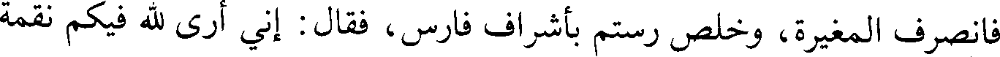
فانصرف المغيرة، وخلص رستم بأشراف فارس، فقال : إني أرى لله فيكم نقمة
File: 000871.gt.txt (if the image is defective, simply delete all Arabic text and the line will be excluded)
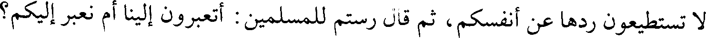
لا تستطيعون ردها عن أنفسكم، ثم قال رستم للمسلمين : أتعبرون إلينا أم نعبر إليكم؟
File: 000872.gt.txt (if the image is defective, simply delete all Arabic text and the line will be excluded)
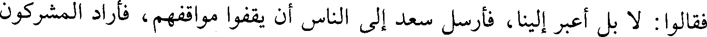
فقالوا : لا بل اعبر إلينا، فأرسل سعد إلى الناس أن يقفوا مواقفهم، فأراد المشركون
File: 000873.gt.txt (if the image is defective, simply delete all Arabic text and the line will be excluded)
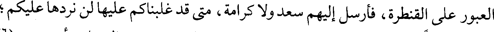
العبور على القنطرة، فأرسل إليهم سعد ولا كرامة، متى قد غلبناكم عليها لن نردها عليكم؛
File: 000874.gt.txt (if the image is defective, simply delete all Arabic text and the line will be excluded)
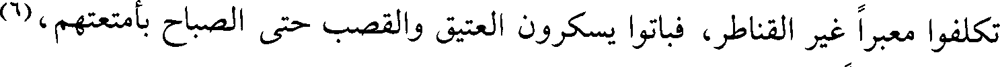
تكلفوا معبرا غير القناطر، فباتوا يسكرون العتيق والقصب حتى الصباح بأمتعتهم،(6)
File: 000875.gt.txt (if the image is defective, simply delete all Arabic text and the line will be excluded)
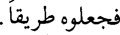
فجعلوه طريقا.
File: 000876.gt.txt (if the image is defective, simply delete all Arabic text and the line will be excluded)
File: 000877.gt.txt (if the image is defective, simply delete all Arabic text and the line will be excluded)
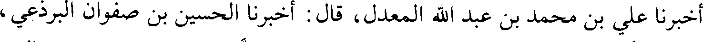
أخبرنا علي بن محمد بن عبد الله المعدل، قال : أخبرنا الحسين بن صفوان البرذعي،
File: 000878.gt.txt (if the image is defective, simply delete all Arabic text and the line will be excluded)
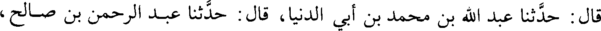
قال : حدثنا عبد الله بن محمد بن أبي الدنيا، قال : حدثنا عبد الرحمن بن صالح،
File: 000879.gt.txt (if the image is defective, simply delete all Arabic text and the line will be excluded)
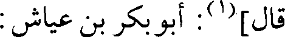
قال](1): أبو بكر بن عياش :
File: 000880.gt.txt (if the image is defective, simply delete all Arabic text and the line will be excluded)
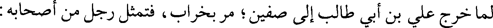
لما خرج علي بن أبي طالب إلى صفين؛ مر بخراب، فتمثل رجل من أصحابه :
File: 000881.gt.txt (if the image is defective, simply delete all Arabic text and the line will be excluded)
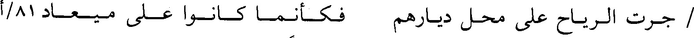
/ جرت الرياح على محل ديارهم فكأنما كانوا على ميعاد 81/أ
File: 000882.gt.txt (if the image is defective, simply delete all Arabic text and the line will be excluded)
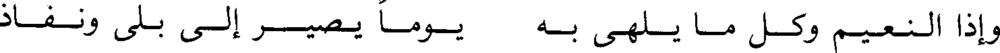
وإذا النعيم وكل ما يلهى به يوما يصير إلى بلى ونفاذ
File: 000883.gt.txt (if the image is defective, simply delete all Arabic text and the line will be excluded)
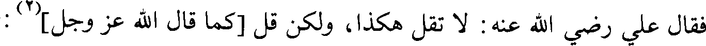
فقال علي رضي الله عنه : لا تقل هكذا، ولكن قل [كما قال الله عز وجل](2) :
File: 000884.gt.txt (if the image is defective, simply delete all Arabic text and the line will be excluded)
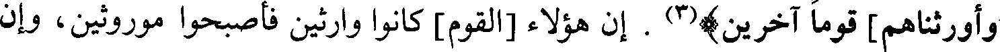
وأورثناها] قوما آخرين)(3) . إن هؤلاء [القوم] كانوا وارثين فأصبحوا موروثين، وإن
File: 000885.gt.txt (if the image is defective, simply delete all Arabic text and the line will be excluded)
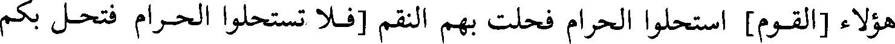
هؤلاء [القوم] استحلوا الحرام فحلت بهم النقم [فلا تستحلوا الحرام فتحل بكم
File: 000886.gt.txt (if the image is defective, simply delete all Arabic text and the line will be excluded)
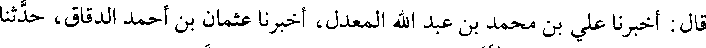
قال : أخبرنا علي بن محمد بن عبد الله المعدل، أخبرنا عثمان بن أحمد الدقاق، حدثنا
File: 000887.gt.txt (if the image is defective, simply delete all Arabic text and the line will be excluded)
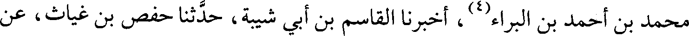
محمد بن أحمد بن البراء(4)، أخبرنا القاسم بن أبي شيبة، حدثنا حفص بن غياث، عن
File: 000888.gt.txt (if the image is defective, simply delete all Arabic text and the line will be excluded)
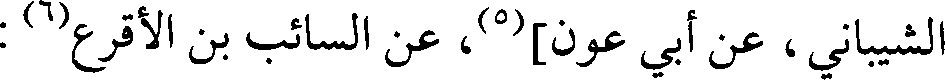
الشيباني، عن أبي عون](5)، عن السائب بن الأقرع(6) :
File: 000889.gt.txt (if the image is defective, simply delete all Arabic text and the line will be excluded)
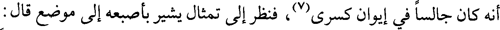
أنه كان جالسا في إيوان كسرى(7)، فنظر إلى تمثال يشير بأصبعه إلى موضع قال :
File: 000890.gt.txt (if the image is defective, simply delete all Arabic text and the line will be excluded)
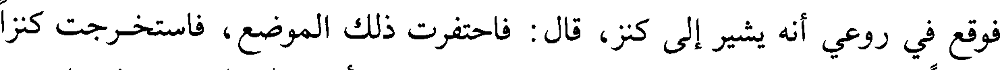
فوقع في روعي أنه يشير إلى كنز، قال : فاحتفرت ذلك الموضع، فاستخرجت كنزا
File: 000891.gt.txt (if the image is defective, simply delete all Arabic text and the line will be excluded)
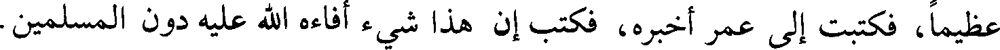
عظيما، فكتبت إلى عمر أخبره، فكتب إن هذا شيء أفاءه الله عليه دون المسلمين.
File: 000892.gt.txt (if the image is defective, simply delete all Arabic text and the line will be excluded)
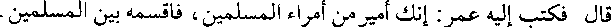
قال فكتب إليه عمر: إنك أمير من أمراء المسلمين، فاقسمه بين المسلمين.
File: 000893.gt.txt (if the image is defective, simply delete all Arabic text and the line will be excluded)
157
File: 000894.gt.txt (if the image is defective, simply delete all Arabic text and the line will be excluded)
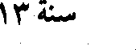
سنة 13
File: 000895.gt.txt (if the image is defective, simply delete all Arabic text and the line will be excluded)
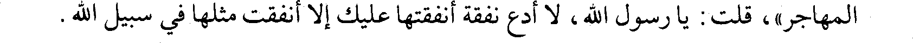
المهاجر»، قلت : يا رسول الله، لا أدع نفقة أنفقتها عليك إلا أنفقت مثلها في سبيل الله.
File: 000896.gt.txt (if the image is defective, simply delete all Arabic text and the line will be excluded)
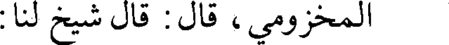
المخزومي، قال : قال شيخ لنا :
File: 000897.gt.txt (if the image is defective, simply delete all Arabic text and the line will be excluded)
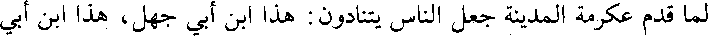
لما قدم عكرمة المدينة جعل الناس يتنادون : هذا ابن أبي جهل، هذا ابن أبي
File: 000898.gt.txt (if the image is defective, simply delete all Arabic text and the line will be excluded)
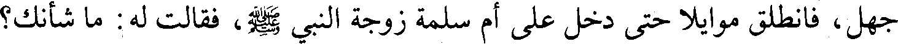
جهل، فانطلق موايلا حتى دخل على أم سلمة زوجة النبي صلعم، فقالت له : ما شأنك؟
File: 000899.gt.txt (if the image is defective, simply delete all Arabic text and the line will be excluded)
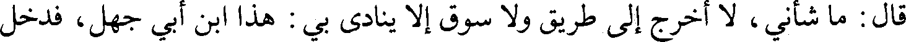
قال : ما شأني، لا أخرج إلى طريق ولا سوق إلا ينادى بي : هذا ابن أبي جهل، فدخل
To Save: `Ctrl+s`, make sure to choose `Webpage, complete`!